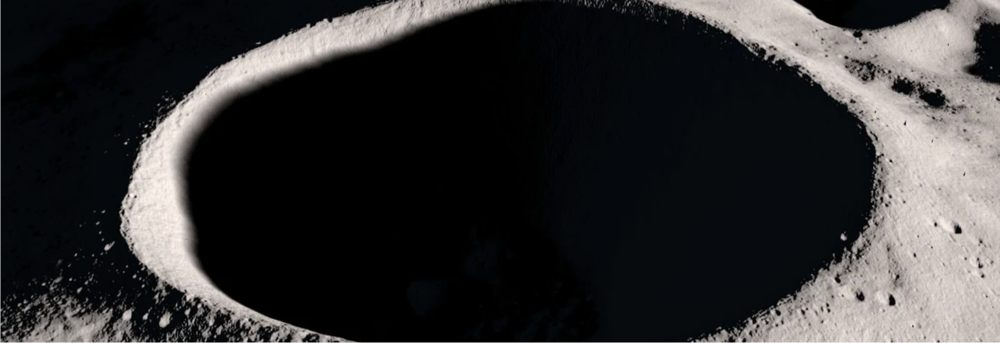
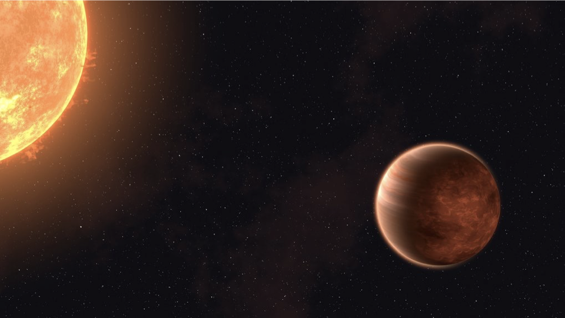
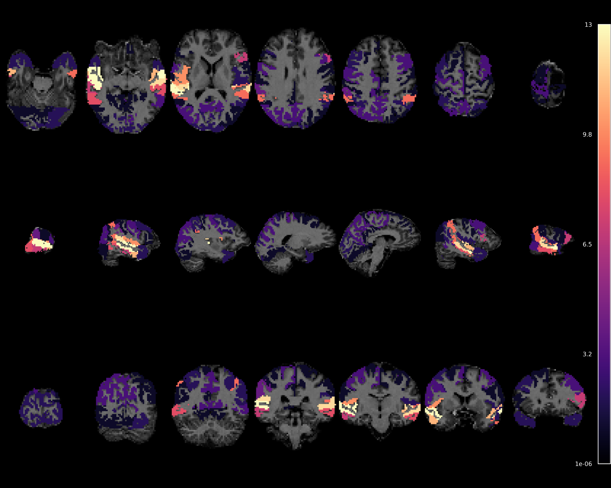
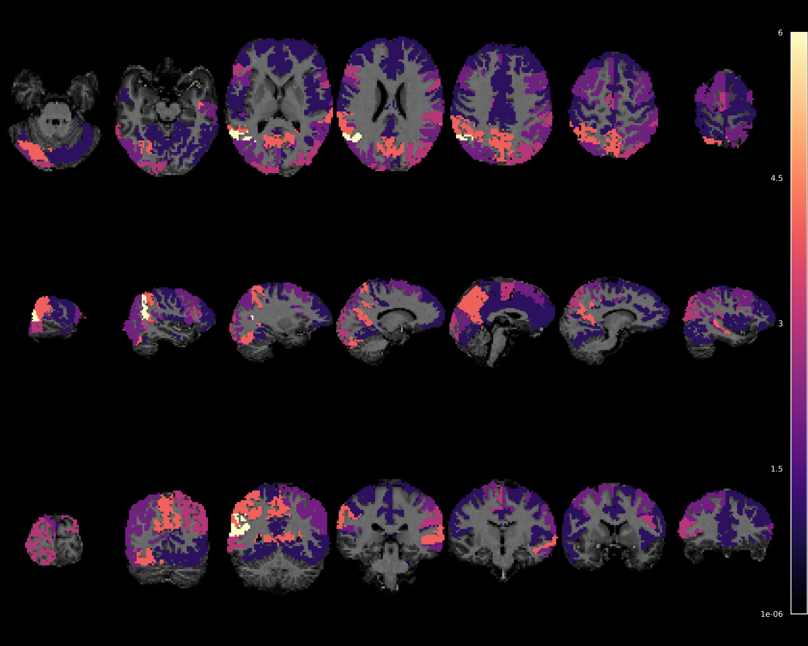
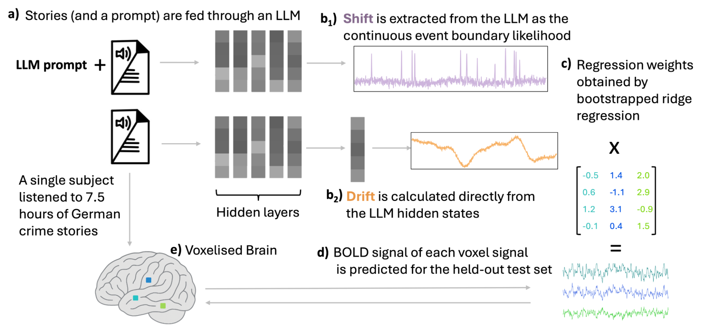
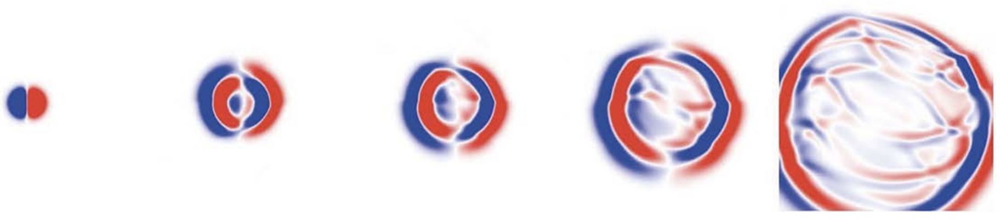

I am Davide Staub, a PhD student at Imperial College London working in the
Scalable Scientific Machine Learning Lab
under the supervision of Dr. Ben Moseley. My research focuses on
harnessing machine learning and physics to build differentiable tools for
reconstructing the three‑dimensional structure of exoplanet atmospheres from
JWST observations.
Before starting my PhD, I spent a year at the HomanLab within the
Psychiatric University Hospital of Zürich, where we combined brain imaging
and large language models to understand how the brain processes
narratives.
LinkedIn
Email: dds25@ic.ac.uk Download my CV
Exoplanet visualisation
Procedurally generated hot-Jupiter–style exoplanet. Refresh to see a new world.
Teaching ▶
Graduate Teaching Assistant, Imperial College London: I help deliver the MSc Deep Learning
course at Imperial College London. This involves running tutorials, answering students’ questions
and supporting practical exercises on topics such as neural network fundamentals, optimisation
and modern architectures.
Lecturer, ETH Zürich – Space Data: I teach the final third of the
Space Data course
in the Master in Space Systems programme at ETH Zürich. My block introduces convolutional neural
networks and U‑Net architectures for denoising images of the Moon’s permanently shadowed regions (PSRs).
These techniques build on the HORUS framework developed by Ben Moseley and Valentin Bickel, and are key to
reliable resource mapping and landing‑site planning. Students learn the basics of deep learning (MLPs,
CNNs, U‑Nets, etc.) and then apply them to clean up PSR images using real training data.

Permanently shadowed regions on the Moon, which require machine‑learning denoising for resource mapping and landing‑site planning.
Research ▶
Current research
My PhD project aims to develop a single, differentiable pipeline that
converts all available JWST observations of a hot Jupiter-thermal
emission spectra, phase curves, eclipses and transmission spectra-into a
unified three‑dimensional temperature field. The
map uses a low‑dimensional spherical‑harmonics basis for horizontal
structure and smooth vertical modes, and the inversion is regularised
using physically motivated terms such as energy balance, global
radiative closure and hydrostatic consistency. This
framework treats the atmosphere as a shared state that must
simultaneously explain observations across multiple viewing geometries.

Artist’s impression of a hot Jupiter exoplanet, showing how these giant planets orbit very close to their stars and face extreme atmospheric conditions.
Previous work
At the HomanLab in Zürich I explored how our brains follow the flow of stories. Working with a
language model, we distilled two simple signals: a drift signal that
captures the gradual build‑up of meaning as a narrative unfolds, and a
shift signal that spikes when the story moves to a new event or scene.
When we compared these signals to high‑resolution fMRI recordings from a
volunteer listening to crime stories, we found that the burst‑like
shift signal lit up the brain’s speech and hearing centres, whereas the
slow drift signal was strongest in the so‑called default‑mode network -
regions like the angular gyrus, precuneus and posterior cingulate that
support memory and imagination. This pattern suggests that auditory
areas mark event boundaries while broader networks follow the slow evolution
of context.
Below are brain maps showing where each signal explained neural
responses. Bright colours indicate regions with stronger effects.

Shift: strong event‑boundary responses in auditory–language cortex.

Drift: slow accumulation responses in higher‑order default‑mode regions.

Method: converting stories into drift and shift signals via a large language model and mapping them to brain responses.
Master’s thesis: Physics‑informed neural networks for seismology
During my master’s studies at ETH Zürich I investigated Physics‑Informed Neural
Networks (PINNs) as a way to solve the elastic wave equation, which describes
how seismic waves propagate through the Earth. By embedding wave physics
directly into the network architecture - for example using custom wavelet or
plane‑wave layers along with encoder and decoder components - I achieved
solutions that were roughly twice as accurate as standard PINNs. I also conditioned the networks on the location of the seismic source, allowing them to infer the
wavefield for countless source locations in a single forward pass and dramatically
speeding up simulations compared with traditional finite‑difference methods.
I presented this work at the 2024 British Seismology Meeting, and it was later summarised in
Astronomy & Geophysics. The full thesis is accessible online via:
10.3929/ethz‑b‑000668359.

Simulated elastic wavefields produced by a physics‑informed neural network.